runs / 2026-10-25 / 194315-949000-strata-q3.8-fn-q4-6892956e
約23分で42KBのボクセル五重塔シーンを生成、検証と反復を経て納品
qwen3.8-flash-next UD q4（llama.cpp 経由、Strata 0.1.48）が36回の呼び出し・総経過1385.3秒で、ボクセル五重塔庭園の単一HTMLファイル（pagoda-voxels.html、42,132バイト）を生成し completed / exit 0 で終えた。生成自体は #2〜#4 の3回（デコード計約852秒）で終わり、残りの約9分はヘッドレスブラウザでの検証とカメラ・山・視覚の反復調整に費やされた。6件のツールエラーはいずれもその場で回復し、致命的停止は起きていない。
成果物
work/pagoda-voxels.html（42,132 バイト）をそのまま同梱している。重いシーンもあるため、必要なときだけ起動する。
pagoda-voxels.html
41 KB · 起動するまで読み込まない
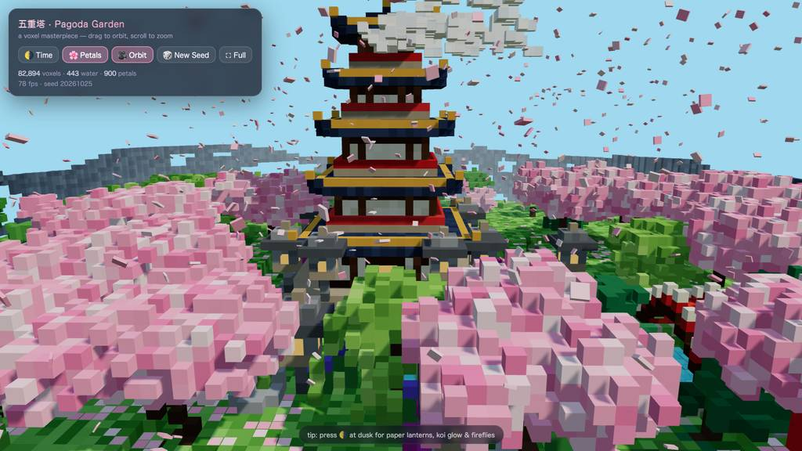
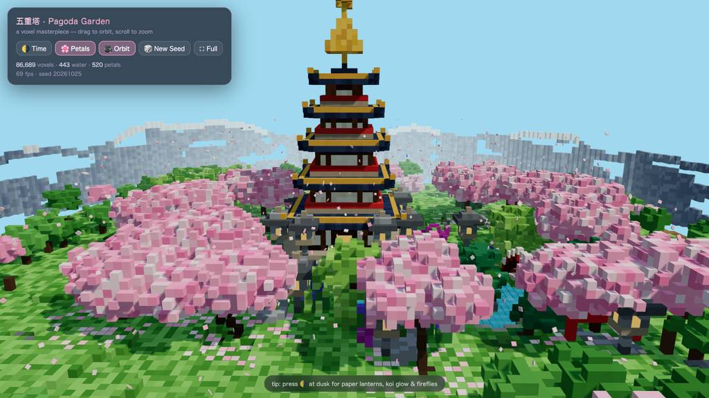
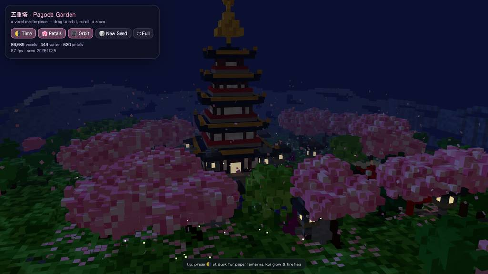
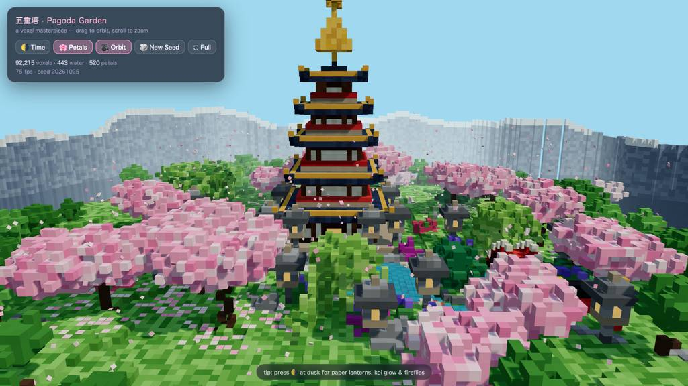
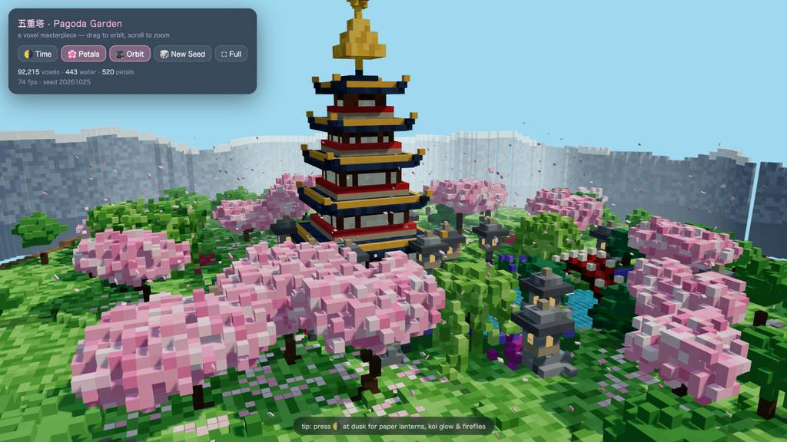
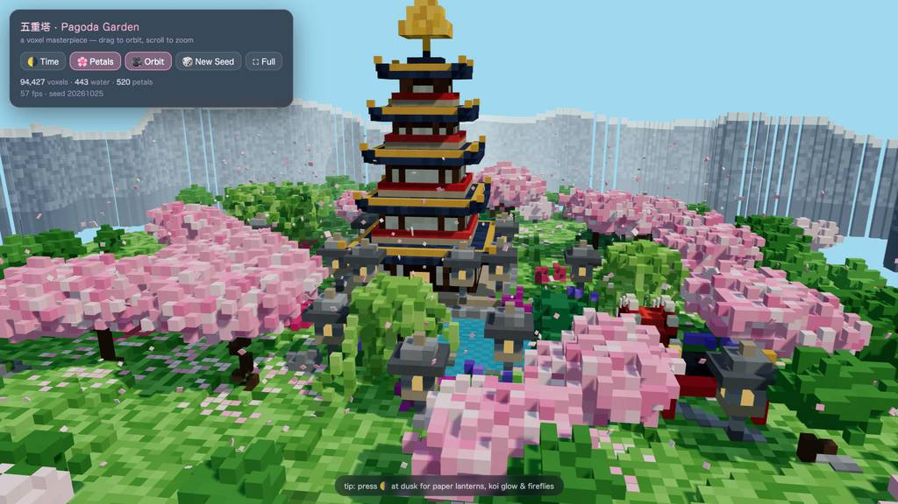
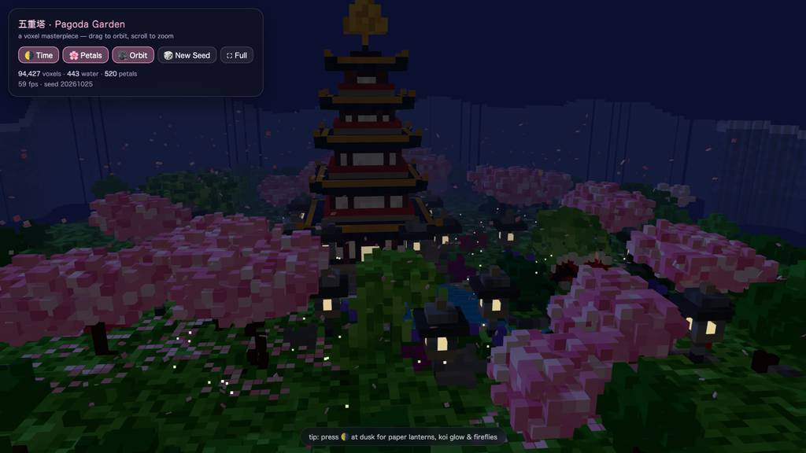
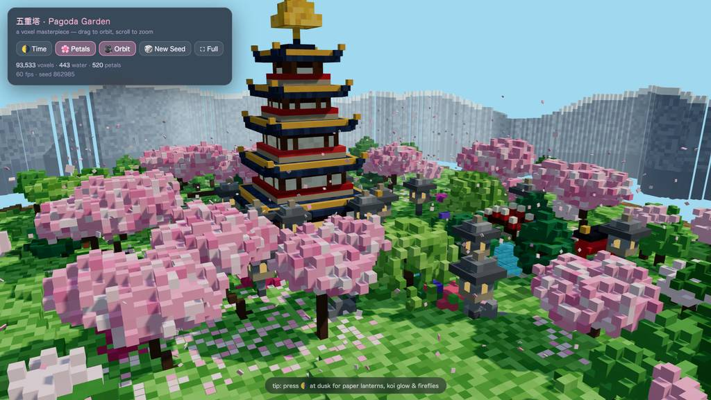
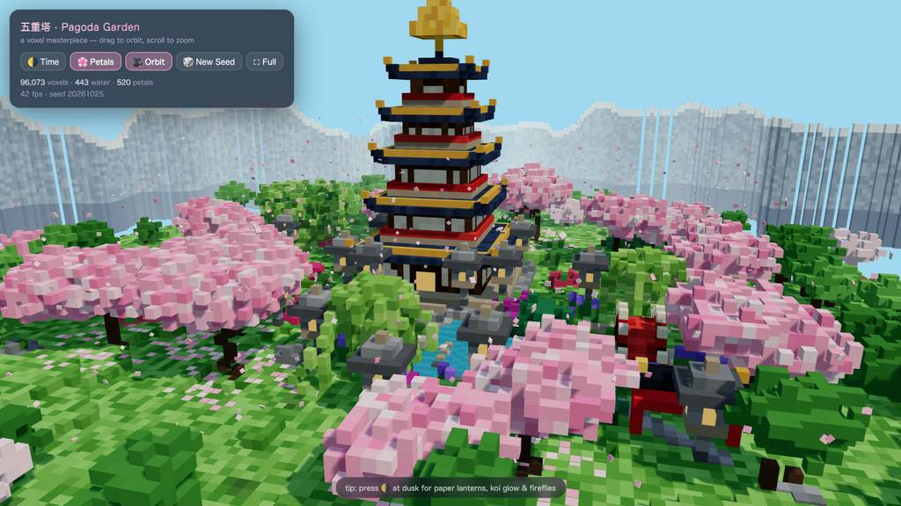
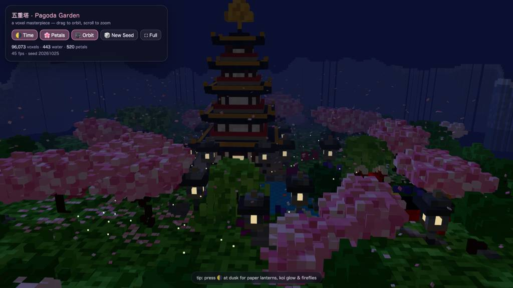
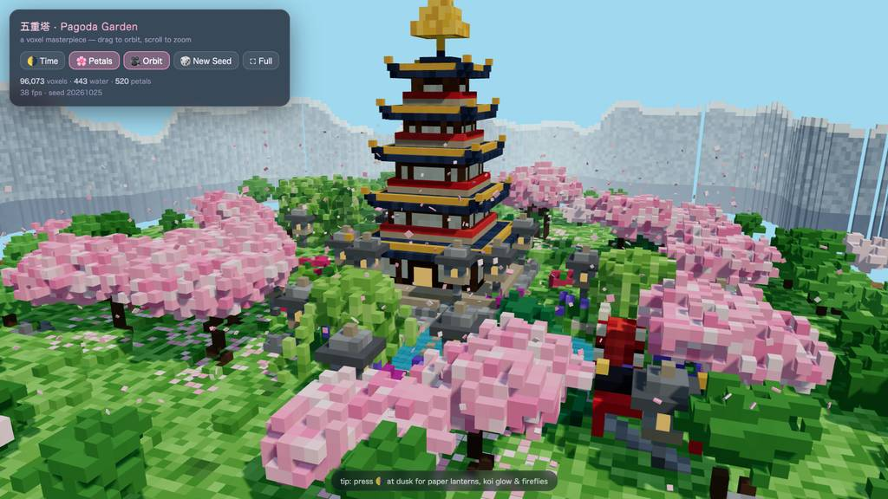
logs/events.jsonl の画像ブロックを内容ハッシュで重複排除して時系列に並べた、制作中の検証用スクリーンショット。最終版とは限らない。
成果物の構成
| 要素 | 内容 |
|---|---|
| 成果物 | pagoda-voxels.html 1ファイル（42KB）約96,000のインスタンス化ボクセル、バッチごとに単一ドローコール、Three.js はCDN読込 |
| 五重塔 | 石の基壇と隅の灯籠、朱の欄干、夜に光る格子窓と入口、六輪＋宝珠の金色の相輪とその光晕 |
| 庭園 | 動揺する水面の鯉池、石島と松、太鼓橋、鳥居、光る10基の石灯籠、蹲踞、曲線敷石道、竹柵 |
| 樹木 | 9本の手動＋5本のシード桜、刈込松、枝垂れ柳2本、64株の竹藪、遠景の野生桜リング |
| 生命感 | 7レーンの鯉（尻尾揺れ）、520枚の花びら、漂う雲、雪冠の山並み、昼〜夜サイクルと蛍の群れ |
| 操作系 | 昼/夜切替、花びら、自動軌道、New Seed 再生成（3回検証済み）、フルスクリーン、ボクセル数/FPS/シード表示 |
| 検証状態 | 最終報告ではヘッドレスChromiumでコンソールエラー0、約75fps、昼/夜/再生成スクリーンショット確認済みと記載 |
モデルの最終メッセージから読み取った内容。コードの確認はしていない。
タイムライン
36 回の API 呼び出しを時間順に並べた。上段の帯の幅が各呼び出しの所要時間で、帯の間の空白がツールの実行時間。下段はその時点のコンテキスト長。細い帯は、エージェントが別に投げた補助リクエスト（画像判定など）。 upstream が usage を返さない場合は、events.jsonl の message_end から復元する。復元できない値は ? で示す。
最も長い 2 回の生成（#4 434 秒・#3 280 秒）で 713.6 秒、壁時計の 51.6%。出力トークンの上位 4 回（#4・#3・#2・#20）で全体の 79.9%（53,744 / 67,252）。推論以外（ツール実行など）は約 154 秒（11%）。
フェーズ別の内訳
| フェーズ | 経過 | 所要 | 全体に占める割合 | 呼び出し | 出力 tok | 何をしたか |
|---|---|---|---|---|---|---|
| ファイル生成 | 0:00–14:31 | 871 秒 | 63.1% | 4 | 52,421 | 補助呼び出しの後、#2 で作業確認と計画、#3 で初稿、#4 で修正版を書き直し、3回合計で出力51,869トークンの42KB HTMLを生成した。 |
| ブラウザ検証 | 14:31–15:15 | 44 秒 | 3.2% | 5 | 943 | ヘッドレスブラウザでページを開き、API誤用のエラーが3件続いたため、#7 でブラウザデバイスのドキュメントを読み、エラーとページ状態の確認に切り替えた。 |
| 初期修正 | 15:15–16:11 | 55 秒 | 4.0% | 4 | 1,949 | カラーセッターがパレット配列を受け付けるよう #11 で edit 修正し、リロードとスクリーンショット、新規タブでの再検証を行った。 |
| 視覚調整の反復 | 16:11–19:25 | 194 秒 | 14.0% | 12 | 6,952 | カメラフレーミング、雪冠付きの山を-solid 化、池を塞ぐ桜の再配置を edit と eval スクリーンショットで繰り返した。2回の edit 失敗は grep/read での再確認で回復した。 |
| 最終仕上げ | 19:25–22:26 | 182 秒 | 13.2% | 8 | 3,694 | todo を同期しつつ、山並みのラギッド化とストライプ原因項の除去を行い、昼・夜・再生成のスクリーンショットで最終検証した。 |
| 整理と納品 | 22:26–23:02 | 35 秒 | 2.5% | 3 | 1,293 | スクリーンショット用足場を bash で削除し、todo を閉じて最終レポートを出力した。 |
フェーズの切れ目は、ログから読み取れる作業内容の変わり目（LLM による区切り）。所要時間は、そのフェーズの最初の呼び出しの開始から次のフェーズの最初の呼び出しの開始まで。
36 回の呼び出しを表で見る
| # | 種別 | フェーズ | 開始 | 所要 秒 | prompt | うち cache | 出力 | tok/s | HTTP | ツール |
|---|---|---|---|---|---|---|---|---|---|---|
| 1 | 補助 | ファイル生成 | 0:00 | 10.9 | 180 | 0 | 552 | 56.1 | 200 | — |
| 2 | 主ループ | ファイル生成 | 0:00 | 157.3 | 8,002 | 0 | 7,478 | 52.6 | 200 | bash + todo |
| 3 | 主ループ | ファイル生成 | 2:37 | 280.1 | 15,803 | 7,997 | 18,318 | 66.1 | 200 | write |
| 4 | 主ループ | ファイル生成 | 7:18 | 433.5 | 34,166 | 34,121 | 26,073 | 60.3 | 200 | write |
| 5 | 主ループ | ブラウザ検証 | 14:31 | 15.3 | 60,282 | 34,161 | 248 | 55.3 | 200 | eval |
| 6 | 主ループ | ブラウザ検証 | 14:47 | 5.6 | 60,765 | 60,531 | 270 | 57.0 | 200 | eval |
| 7 | 主ループ | ブラウザ検証 | 15:05 | 2.5 | 61,350 | 61,036 | 74 | 47.8 | 200 | read |
| 8 | 主ループ | ブラウザ検証 | 15:08 | 3.2 | 61,471 | 61,424 | 145 | 59.3 | 200 | eval |
| 9 | 主ループ | ブラウザ検証 | 15:11 | 4.5 | 62,200 | 61,615 | 206 | 59.3 | 200 | eval |
| 10 | 主ループ | 初期修正 | 15:15 | 17.2 | 63,059 | 62,406 | 838 | 52.1 | 200 | read |
| 11 | 主ループ | 初期修正 | 15:33 | 8.1 | 64,180 | 63,897 | 373 | 52.7 | 200 | edit |
| 12 | 主ループ | 初期修正 | 15:41 | 9.0 | 64,778 | 64,554 | 452 | 55.7 | 200 | eval |
| 13 | 主ループ | 初期修正 | 15:50 | 5.6 | 65,447 | 65,231 | 286 | 59.6 | 200 | eval |
| 14 | 主ループ | 視覚調整の反復 | 16:11 | 29.9 | 66,623 | 65,732 | 1,428 | 51.4 | 200 | edit |
| 15 | 主ループ | 視覚調整の反復 | 16:40 | 6.9 | 68,226 | 68,052 | 318 | 53.0 | 200 | grep |
| 16 | 主ループ | 視覚調整の反復 | 16:47 | 21.2 | 69,373 | 68,544 | 1,053 | 53.0 | 200 | edit |
| 17 | 主ループ | 視覚調整の反復 | 17:09 | 4.0 | 71,164 | 70,425 | 123 | 45.4 | 200 | grep |
| 18 | 主ループ | 視覚調整の反復 | 17:13 | 3.4 | 71,502 | 71,287 | 129 | 51.3 | 200 | edit |
| 19 | 主ループ | 視覚調整の反復 | 17:16 | 6.5 | 71,852 | 71,631 | 328 | 59.2 | 200 | eval |
| 20 | 主ループ | 視覚調整の反復 | 17:43 | 37.7 | 73,729 | 72,179 | 1,875 | 52.6 | 200 | edit |
| 21 | 主ループ | 視覚調整の反復 | 18:21 | 2.5 | 75,810 | 75,604 | 73 | 48.8 | 200 | read |
| 22 | 主ループ | 視覚調整の反復 | 18:23 | 11.0 | 76,409 | 75,883 | 520 | 53.1 | 200 | edit |
| 23 | 主ループ | 視覚調整の反復 | 18:34 | 6.2 | 77,283 | 76,929 | 256 | 51.0 | 200 | grep |
| 24 | 主ループ | 視覚調整の反復 | 18:41 | 8.2 | 77,920 | 77,539 | 398 | 55.7 | 200 | edit |
| 25 | 主ループ | 視覚調整の反復 | 18:49 | 10.0 | 78,680 | 78,318 | 451 | 50.8 | 200 | eval |
| 26 | 主ループ | 最終仕上げ | 19:25 | 23.0 | 80,726 | 79,131 | 1,066 | 50.8 | 200 | todo + grep |
| 27 | 主ループ | 最終仕上げ | 19:48 | 4.7 | 82,647 | 81,792 | 148 | 45.6 | 200 | todo |
| 28 | 主ループ | 最終仕上げ | 19:52 | 8.3 | 82,974 | 82,794 | 422 | 56.7 | 200 | todo + todo + edit |
| 29 | 主ループ | 最終仕上げ | 20:01 | 9.6 | 84,304 | 83,397 | 470 | 58.2 | 200 | eval |
| 30 | 主ループ | 最終仕上げ | 20:44 | 32.5 | 85,275 | 34,161 | 603 | 49.8 | 200 | edit |
| 31 | 主ループ | 最終仕上げ | 21:17 | 6.2 | 86,365 | 85,879 | 286 | 57.5 | 200 | eval |
| 32 | 主ループ | 最終仕上げ | 21:47 | 17.0 | 87,030 | 66,929 | 402 | 48.0 | 200 | edit |
| 33 | 主ループ | 最終仕上げ | 22:04 | 6.3 | 87,611 | 87,431 | 297 | 54.9 | 200 | eval |
| 34 | 主ループ | 整理と納品 | 22:26 | 19.8 | 88,177 | 66,929 | 525 | 48.3 | 200 | bash |
| 35 | 主ループ | 整理と納品 | 22:46 | 3.8 | 88,910 | 88,702 | 153 | 53.0 | 200 | todo + todo |
| 36 | 主ループ | 整理と納品 | 22:50 | 11.6 | 89,303 | 89,063 | 615 | 57.5 | 200 |
試行錯誤
ツールがエラー（isError）を返した結果の一覧。ツールは成功したのにモデル自身が内容を壊したケースは、ここには出ない。
エラーとして記録された 6 件
| 経過 | ツール | 起きたこと | 分類 |
|---|---|---|---|
| 14:46 | eval | browser.open() に URL を直接渡したが、options オブジェクト内での指定が必要だった。TypeError: browser.open() expects an options object; pass the URL inside it: browser.open({ url, name }) at open ([eval-prelude:browser]:262:24) at <anonymous> (js-cell-039b0474-768e-441b-af64-2882cd2 | API誤用 |
| 14:52 | eval | タブ起動とページタイトル表示は成功したが、存在しない tab.logs() を呼んだ。Opened tab "voxel" on headless browser (hidden, shared) URL: file://~ Title: Voxel Pagoda Garden — 五重塔の庭 TypeError: tab.logs is not a function. (In 'tab.logs()', 'tab.logs' is | API誤用 |
| 15:08 | read | マウントされていない xd://browser を read で参照しようとした。No such tool: xd://browser. Mounted devices: ast_edit, debug, lsp. Active top-level tools are also dispatchable via xd://<tool>. | ツール誤用 |
| 15:50 | eval | 存在しない tab.clearErrors() を呼び出した。TypeError: tab.clearErrors is not a function. (In 'tab.clearErrors()', 'tab.clearErrors' is undefined) at <anonymous> (js-cell-7de0cf0b-8f7c-47f6-86ba-d3293f443502.js:5:22) at async Xce (/$bunfs/root/ | API誤用 |
| 16:40 | edit | 過去に一度も表示していない行155・158・246をアンカーにして edit が拒否された。This edit anchors to lines 155, 158, 246 of pagoda-voxels.html that [pagoda-voxels.html#657A] never displayed (it showed a partial range, a search hit, or a folded summary). Actual file content at tho | edit失敗 |
| 18:21 | edit | 表示していない行641・646-647をアンカーにして edit が拒否された。This edit anchors to lines 641, 646-647 of pagoda-voxels.html that [pagoda-voxels.html#9ADD] never displayed (it showed a partial range, a search hit, or a folded summary). Actual file content at thos | edit失敗 |
経過は、そのツールを呼んだターンの終了時刻。エラー本文は先頭 300 文字までで、パスや接続先は伏せてある。
気づいた点
計測データ（呼び出し一覧・エラー・最終メッセージ）だけから LLM が書いた読み取り。文中の数値は、上の KPI や表と照らして確認する。
トークン生成に集中
#2〜#4 の3回で出力 7,478+18,318+26,073=51,869 トークン、総出力67,252の約77%を占める。デコードも 142.1+277.1+432.7=851.9 秒で全体1385.3秒の約61%であり、実作業の大半は最初の書き出しにあった。
ブラウザAPIの推測
E1・E2・E4 が open の引数形、tab.logs、tab.clearErrors と3種の別メソッド誤用で、#5〜#9 の11秒間に集中した。直後 #7 でデバイス文書を読み、#8 で API を直接 inspect して以後は eval 呼び出し（11回）が安定している。
edit失敗からの回復
E5・E6 はいずれも表示済み範囲外の行へのアンカーで、直後に #15 の grep、#21 の read で該当行を再取得し、#16・#22 で同一作業を成功させている。失敗は推測編集に起因し、文書参照で解消された構図が読み取れる。
キャッシュ剥落の箇所
#13 は ctx 65,447 のうち cache 65,231 で prefill 0.8秒だが、#30 は ctx 85,275 に対し cache 34,161 に落ち prefill 20.0秒を要した。#32・#34 も cache 66,929 へ後退し prefill 8〜9秒で、最終調整期に前提コンテキストの一部が再計算されている。
検証重視の時間配分
初稿書き込み完了（#4 終了 871秒時点）以降の約514秒のうち、eval 11回と11枚のスクリーンショット、grep/read 7回が視覚確認に充てられている。特に #14〜#25 の約200秒はカメラ・山・桜の位置決め反復で、納品前の検証が工程の後半を支配した。
入力と設定
Design and create a very creative, elaborate, and detailed voxel art scene of a pagoda in a beautiful garden with trees, including some cherry blossoms. Make the scene impressive and varied and use colorful voxels. Add as many details as possible to showcase your attention to them. Use whatever libraries to get this done but make sure I can paste it all into a single HTML file.
input/prompt.md の全文。SHA-256 は ceece4685b37…。
| omp の起動オプション | --print --mode json --thinking high --no-title --approval-mode yolo |
| upstream | （接続先は伏せている） |
| タイムアウト | 43,200 秒 |
config/00-omp.yml
setupVersion: 2 autolearn: enabled: false autoContinue: false